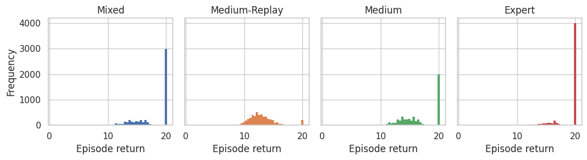
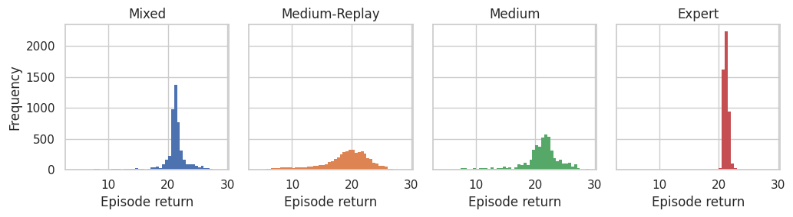
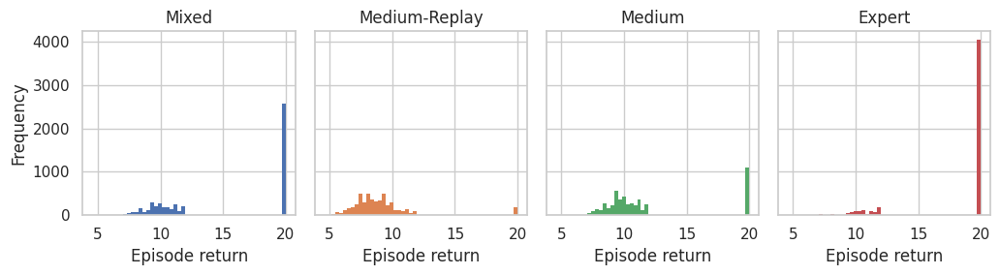
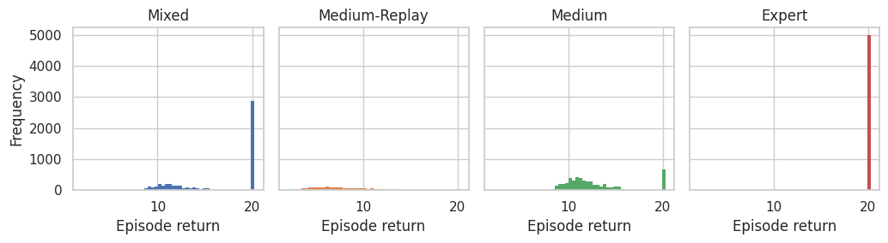

Dataset Cards - CFCQL

6h_vs_8z - Download
Metadata
| Environment name | Version | Agents | Action type | Observation size | Reward type |
|---|---|---|---|---|---|
| SMAC (v1) | SMAC V1, from OxWhiRL | 6 | Discrete | [78] | Dense |
Generation procedure for each dataset
Converted from cfcql format to a Vault.
Summary statistics
| Uid | Episode return mean | Min return | Max return | Transitions | Trajectories | Joint SACo |
|---|---|---|---|---|---|---|
| Mixed | 17.81 ± 2.88 | 9.14 | 20.17 | 217723 | 5000 | 0.24 |
| Medium-Replay | 12.97 ± 2.22 | 0.81 | 20.03 | 182403 | 5000 | 1.00 |
| Medium | 16.63 ± 3.03 | 9.80 | 20.00 | 207008 | 5000 | 0.12 |
| Expert | 19.01 ± 2.11 | 9.14 | 20.17 | 228120 | 5000 | 0.12 |

3s_vs_5z - Download
Metadata
| Environment name | Version | Agents | Action type | Observation size | Reward type |
|---|---|---|---|---|---|
| SMAC (v1) | SMAC V1, from OxWhiRL | 3 | Discrete | [48] | Dense |
Generation procedure for each dataset
Converted from cfcql format to a Vault.
Summary statistics
| Uid | Episode return mean | Min return | Max return | Transitions | Trajectories | Joint SACo |
|---|---|---|---|---|---|---|
| Mixed | 21.04 ± 2.51 | 5.58 | 29.00 | 888375 | 5000 | 0.23 |
| Medium-Replay | 18.85 ± 4.20 | 4.03 | 28.53 | 1082739 | 5000 | 0.99 |
| Medium | 20.86 ± 3.47 | 5.58 | 29.00 | 1174576 | 5000 | 0.11 |
| Expert | 21.19 ± 0.70 | 9.21 | 24.87 | 600520 | 5000 | 0.12 |

5m_vs_6m - Download
Metadata
| Environment name | Version | Agents | Action type | Observation size | Reward type |
|---|---|---|---|---|---|
| SMAC (v1) | SMAC V1, from OxWhiRL | 5 | Discrete | [55] | Dense |
Generation procedure for each dataset
Converted from cfcql format to a Vault.
Summary statistics
| Uid | Episode return mean | Min return | Max return | Transitions | Trajectories | Joint SACo |
|---|---|---|---|---|---|---|
| Mixed | 15.11 ± 5.11 | 6.38 | 20.00 | 131703 | 5000 | 0.22 |
| Medium-Replay | 9.02 ± 2.59 | 4.57 | 20.00 | 118405 | 5000 | 0.96 |
| Medium | 12.05 ± 4.36 | 6.38 | 20.00 | 135256 | 5000 | 0.10 |
| Expert | 18.17 ± 3.79 | 7.13 | 20.00 | 128536 | 5000 | 0.12 |

2s3z - Download
Metadata
| Environment name | Version | Agents | Action type | Observation size | Reward type |
|---|---|---|---|---|---|
| SMAC (v1) | SMAC V1, from OxWhiRL | 5 | Discrete | [80] | Dense |
Generation procedure for each dataset
Converted from cfcql format to a Vault.
Summary statistics
| Uid | Episode return mean | Min return | Max return | Transitions | Trajectories | Joint SACo |
|---|---|---|---|---|---|---|
| Mixed | 16.39 ± 4.33 | 7.96 | 20.27 | 232528 | 5000 | 0.25 |
| Medium-Replay | 7.94 ± 3.41 | 2.00 | 20.12 | 100121 | 1976 | 1.00 |
| Medium | 12.76 ± 3.32 | 7.96 | 20.27 | 253992 | 5000 | 0.12 |
| Expert | 19.97 ± 0.37 | 13.90 | 20.08 | 211832 | 5000 | 0.12 |